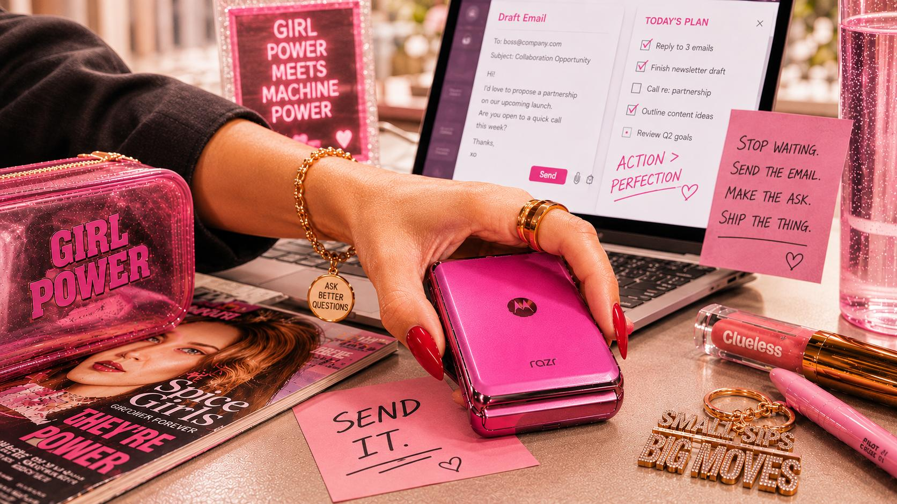
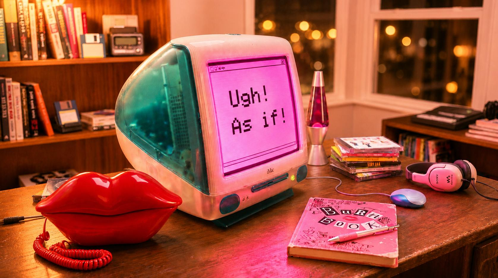

I couldn't help but wonder...
...why every AI resource I found was either written by men in fleece vests (say no more), or so surface-level it basically amounted to “AI is transformative!” AI is transformative? Groundbreaking...
I have a full-time job, a team to manage, and a calendar that is perpetually a Tetris game I'm losing. The idea of adding “become AI-literate” to that pile felt about as realistic as Miranda Priestly asking me to get her the unpublished Harry Potter manuscript. Technically possible, but at what personal cost?
Meanwhile I was watching people build AI tools that weren't solving the right problems because they weren't asking the right questions. And I kept thinking: I know what the right questions are. I just don't know how to use this thing yet.
So eventually I stopped waiting and started tinkering. I built something small that actually helped with my real job. It wasn't pretty. It definitely wasn't perfect. But it worked well enough to make me realize: oh. I can do this. The thing stopping me wasn't ability. It was that nobody had explained it in a way that made me want to start.
I want to be clear: I am no AI Slayer. There is no Watcher guiding me through a prophecy, no ancient training montage that happened off-screen. I'm further down the path than I was, but I'm still learning, still getting things wrong, still googling stuff mid-conversation.
But I got tired of waiting for something that didn't exist. So I'm writing it. For me. And for you. And I'm not doing it alone. Throughout this series you'll hear from other women who are figuring this out in real time alongside me. This isn't a lecture. It's a group chat.
If any of that sounds familiar: get in loser, we're learning AI.
The Invisible Load Has an AI Layer Now

There's a growing body of research on why women are less engaged with AI than men, and the commentary loves to focus on confidence and imposter syndrome. Those are real, but they're not what I experienced and they're not what I hear from the women I talk to. What I hear is: I'm already drowning. I have no idea where to start. And even if I did, when exactly am I supposed to do this?
You cannot add hours to a day that's already over-subscribed. And women in corporate roles are already carrying more context, more logistics, more emotional labor, more “office housework” than their male peers. You know how there's always one person who preps the deck before the meeting, remembers the feedback from last time, follows up on the action items nobody else tracked, and also somehow delivers her own work on time? That person is usually not named Steve. No offense to all the Steves out there fightin' the good fight.
It's not a confidence problem. It's a physics problem.
Lean In's 2026 survey gets into the specifics and they're uncomfortable enough to be useful:
That last stat hit me like Samantha Jones delivering an uncomfortable truth over brunch. It captures something real about how women have been conditioned in professional environments. We've spent entire careers building credibility through preparation, thoroughness, and visible effort. Now there's a tool that makes hard things look easy, and some part of our brain calculates (correctly, based on historical data) that “easy” might get held against us.
It's not imposter syndrome. It's pattern recognition. (Ironic, given what AI actually is, but we'll get there.)
And here's the cruel part: the tool that could give you time back requires time you don't have to learn. So you don't start. The gap compounds week over week. And a year from now the distance between you and your colleague who started six months ago isn't a gap. It's a canyon.
And as Dolly would say, you better get to building your own bridge, because ain't nobody building it for you, honey.

Why You Can't Afford the Glacial Pace
Fei-Fei Li, the Stanford professor known as the “Godmother of AI,” said it plainly:
If we don't get women involved in AI, we're going to have a future that's built by half the population for all of the population.
Fei-Fei Li, Stanford AI Lab
And this isn't just about fairness. Harvard research found that when women don't use AI, the tools literally get worse for everyone because they learn from a skewed pool of users. The less women use them, the less they work for women, and the cycle keeps going. Getting women involved in AI isn't charity. It makes the technology better for all of us.
And right now? That's exactly what's happening. The colleague who got encouraged to try AI while you were organizing the team offsite or prepping your VP presentation is already six months ahead.
Here's what it actually looks like when women start using AI: they draft the board memo in twenty minutes instead of two hours. They prep for a meeting by having AI summarize the last three months of project updates so they walk in already knowing what everyone else forgot. They get a first pass on that awkward email to the difficult stakeholder, tweak it with their own judgment, and send it in five minutes instead of agonizing over it for thirty. The work doesn't get worse. It gets done faster, and the time you get back is yours. Is it perfect every time? No. Sometimes AI gives you something useless and you start over. But even then, you've lost five minutes instead of an hour.
BCG found that senior women who actually break through the initial hesitation don't just catch up to men. They lead them by 14 percentage points. Fourteen. The women who get past the “when would I even do this” phase become the power users, because they bring something AI fundamentally cannot replicate: fifteen years of professional judgment. The ability to ask the right question before opening the tool. The instinct that tells you something is off in a document before you can even articulate why.
This isn't about becoming technical. It's about not leaving a genuinely useful tool sitting unopened on your desk while everyone else figures out what it can do.

The Dress Code
What to expect. What not to expect. What to wear is your business — but whatever it is, we're sure it's fabulous.
I started LAiDIES because the on-ramp I needed didn't exist. Everything was either too technical (written for people who wanted to build models, not use them), too shallow (listicles with all the nutritional value of a rice cake), or too time-consuming (40-hour courses marketed to people who apparently don't have jobs, children, or a standing Thursday businesswomen's special happy hour with friends).
So I made something different. Posted every Wednesday (as if we would choose any other day), written for women in corporate roles who are already competent, already busy, and just need someone to explain this in a way that connects to actual work rather than theoretical computer science.
Think of it like Elle Woods' approach to Harvard Law. She didn't show up knowing everything. She showed up being underestimated, learned the system faster than anyone expected, and won her case because she brought a different kind of intelligence that nobody in that room had thought to apply. You don't need a technical background. You just need someone to explain it clearly and a group of women to figure it out with.

The Cocktail Party Explanation
What you'd say if someone asked you "so what IS AI?" over drinks.
Before next week, I want you armed with a mental model solid enough to hold up at any dinner table, boardroom, or group chat where someone says “AI” like they know what they're talking about.
Here's what AI actually is, stripped of everything unnecessary:
Imagine someone who has absorbed an enormous amount of human writing — books, articles, websites, forums, manuals — billions of documents, but has never lived a single day of real life. No job, no relationships, no consequences, no awkward moment at a holiday party that taught them something about human nature. They can sound incredibly knowledgeable because they've absorbed enormous volumes of how language works, how ideas connect, how arguments are typically structured. But they don't understand any of it the way you do — through experience, through getting things wrong, through building judgment one decision at a time over a career.
When you type something into ChatGPT or Claude or Gemini, you're not talking to an intelligence. You're prompting a very sophisticated pattern-completion engine that predicts, word by word, what text should come next based on everything it absorbed during training. It's autocomplete at a scale that feels like thought but isn't.
Think of it like Cher's closet computer from Clueless — it can match patterns and generate outfit combinations all day long, but it has absolutely no idea that you can't wear white after Labor Day to a conservative client meeting where you're already fighting to be taken seriously. That contextual judgment? It's yours. AI will never have it. It's the Louboutins of the professional world. Anyone can buy a shoe, but not everyone knows how to walk in them.
But AI can also be confidently, spectacularly wrong. It doesn't verify whether what it generates is true — it only knows whether it's plausible. It's the Burn Book from Mean Girls: a collection of observations written with absolute authority, some accurate, some completely fabricated, all presented with the same unbothered confidence. “Made out with a hot dog”? AI would generate that statement with the exact same certainty as an actual fact, because it has no mechanism for distinguishing between the two. Regina George energy, but make it software.
Your job is knowing which parts to trust and which to push back on. You've been doing that with other people's work your entire career. This is no different.
So You Don't Pull a Cher
Quick definitions so you can use these words confidently in a meeting without accidentally arguing that it doesn't say RSVP on the Statue of Liberty.
Generative AI Think of it like having a Carrie Bradshaw in your laptop. Not one that finds you articles to read (that's Google). One that actually writes the column for you. Read full definitionShow less
Model ChatGPT, Claude, and Gemini are products — the apps you open. The model is the trained brain powering each one. Read full definitionShow less
Hallucination When AI produces something that sounds confident and polished but is factually wrong or completely made up. It''s not lying — lying requires intent. Read full definitionShow less
Got a sharper “Remember, LAiDIES:” line that would make Dolly proud? Drop yours in the comments. The favorite gets featured, with credit, in next week's Episode. We're trailblazers here, not idea thieves.